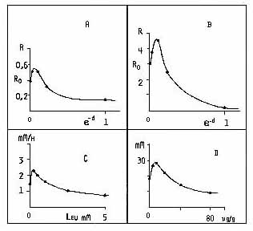
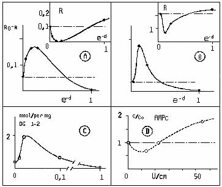

It has been shown that the algebraic form of the relations between two biochemical parameters may prove to be a
sensitive way for evidencing stress effects (Bounias, 1975; Bounias et al.,1987). This might allow the
characterization of stresses even in particular cases where no deviation of the concentrations from the normal range
of natural values can be detected.
Fig. 2 - Biphasic dose/effectrelationships: A et B resp. = Raffinose and Ribose-like concentrations versus e
-d.
C = control of Barley leaves phosphatases by L. leucine (Bounias & Pachéco, 1972).
D = control of Lettuce roots growth (mm) by solstitiolide (µ/g) Stevens et Merril, 1985
|  |
|
|
Fig. 3. Biphasic dose/effect relationships:
A and B resp. = theonine and serine concentrations (in small
frames) or differential levels (Ro-R) versus e-d.
C = action of a bacterial toxin on mosquitoes
lipids (Nizeyimana et al.,1987).
D = action of and incident electromagnetic field intensity on
cAMP levels in cultured bone cells of rat (Sornjen et al.,1982).
|  |
|